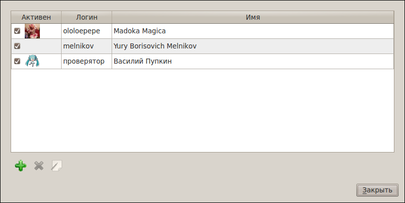
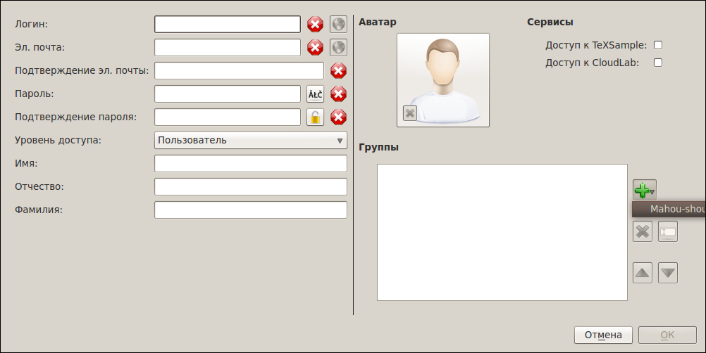
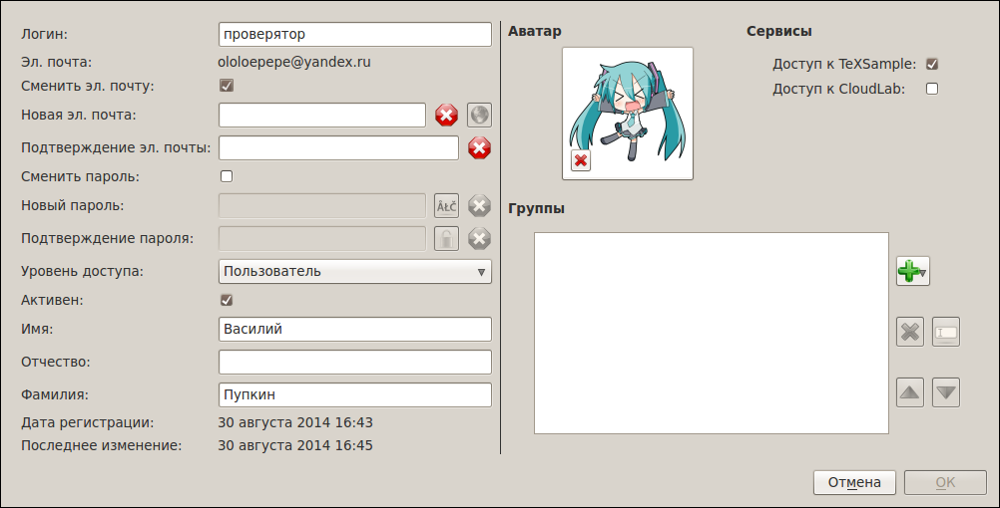
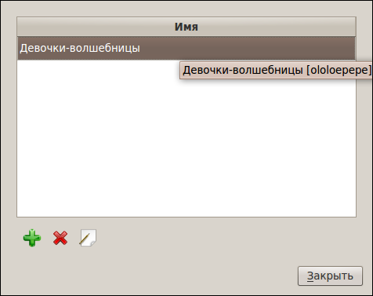
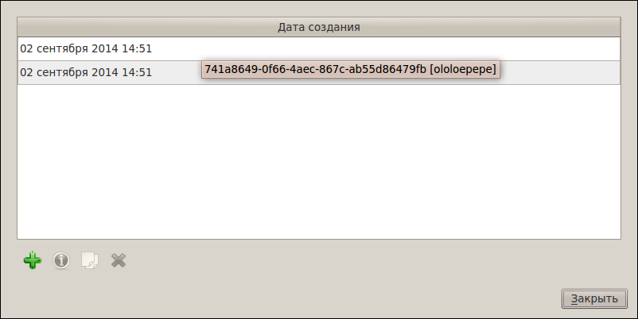
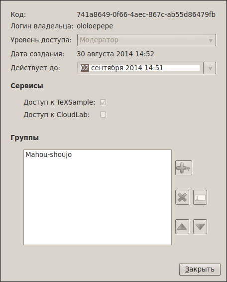

[Назад: 4.2. Управление аккаунтом и восстановление]
[Далее: 4.4. Сэмплы]
Администрирование
Администрирование доступно пользователям с уровнем доступа Модератор и выше. Для доступа к административным
функциям воспользуйтесь меню Администрирование в меню TeXSample, либо тем же меню в меню кнопки на окне
TeXSample:

Управление пользователями и инвайтами доступно только пользователям с уровнем доступа Администратор и выше.
Управление пользователями
Диалог управления пользователями позволяет добавлять новых пользователей, удалять существующих и редактировать их
данные.

Процесс добавления пользователя похож на регистрацию, однако имеются некоторые отличия.

Во-первых, не требуется указывать инвайт-код. Во-вторых, можно задать уровень доступа, принадлежность к группам и
доступные для пользователя сервисы. Уровень доступа пользователя не может быть выше, чем у администратора, который его
добавляет. Также нельзя указывать сервисы, к которым у администратора нет доступа.
Редактирование пользователя, в свою очередь, схоже с управлением собственным аккаунтом.

Различие состоит в процессе смены пароля и адреса электронной почты. Для того, чтобы сменить их, нужно поставить
соответствующие галочки. Подтверждение не требуется.
Как и в случае с добавлением пользователя, можно менять уровень доступа, принадлежность к группам и доступные сервисы.
Ограничения те же.
Управление группами
Сервис TeXSample на данный момент не использует группы поьзователей, однако возможность управлять ими присутствует для
совместимости со смежным сервисом CloudLab, так как доступ к обоим сервисам осуществляется при помощи одного и того же
аккаунта.

Добавление, редактирование и удаление групп тривиально и не требует какого-то дополнительного описания. Достаточно
указать название группы при добавлении/редактировании. Единственное ограничение - нельзя редактировать или удалять
группы, созданные другим пользователем (для Суперпользователя данное ограничение не действует).
Управление инвайтами
Инвайты (или, иначе, инвайт-коды) требуются для регистрации. Администратор может сгенерировать один или более
инвайт-кодов, а затем раздать их пользователям, которым он хочет предоставить возможность регистрации в TeXSample.

Чтобы сгенерировать инвайты, нужно щелкнуть по кнопке с изображением зеленого знака "плюс". Откроется следующий диалог:

в котором нужно указать срок действия кодов (по умолчанию - трое суток), а также их количество. Следует также задать
уровень доступа, группы и сервисы. Эти данные будут назначены пользователям, которые зарегистрируются с использованием
сгенерированных кодов.
Удалять можно сразу несколько инвайт-кодов. Для этого следует выделить их, зажав клавишу Shift, а затем нажать
кнопку с изображением красного крестика.
Информацию об инвайт-коде можно посмотреть, нажав кнопку с изображением вопросительного знака. Эта кнопка активна
только когда выделен ровно один инвайт-код.

[Назад: 4.2. Управление аккаунтом и восстановление]
[Далее: 4.4. Сэмплы]